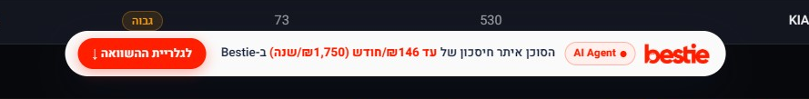
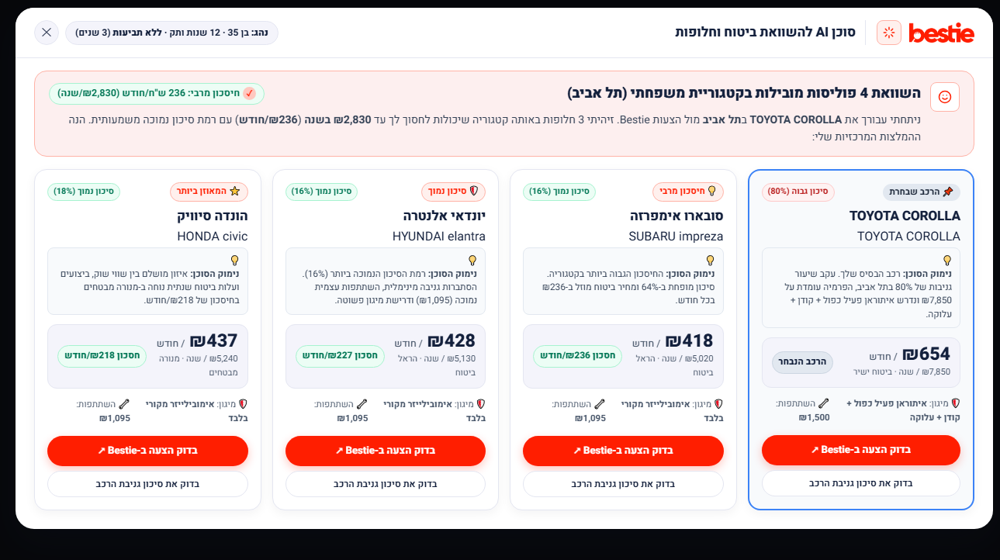
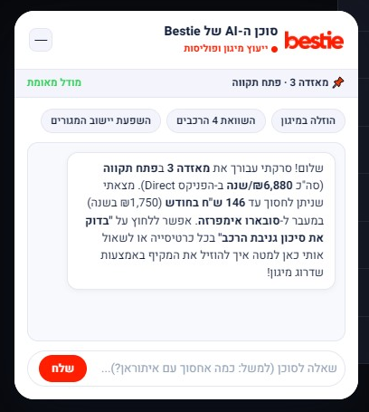

מחיזוי ML פסיבי לסוכן השוואת ביטוח אוטונומי בזמן אמת
מסמך זה מתעד את חיבור אומדן הסיכון המחקרי לסוכן AI אוטונומי המבוסס על כלים : בחירת דגם ועיר מפעילה ברקע ניתוח כיסוי נתונים, סימולציית מחיר לפרופיל נהג ייחוס וחיפוש של עד שלוש חלופות. הצ'אט המובנה מאפשר לבחון תרחישי מיגון והשוואה. המחירים ודרישות המיגון מחושבים בקוד לצורכי הדגמה, והקישור ל-Bestie מאפשר למשתמש לעבור לאתר חיצוני לקבלת הצעה מסוכן בחברת הביטוח.
הסוכן וגבולות הסימולציה
01. המטרה, הבעיה העסקית ואיך פתרנו אותה
Problem to solution fit
בשלב א' של הפרויקט נבנה פייפליין מחקרי הבוחן ספירות גניבות ל־2025 מתוך ספירות 2024 ומציג מדד יחסי בטווח 0–100 לצירופים מכוסים (המדד אינו אחוז הסתברות). מנקודת מבט של ניהול מוצר (Product Management), זיהינו פער קריטי במסע המשתמש בין תובנה סטטיסטית לבין החלטה צרכנית:
פער ה-"So What?" של דשבורדים סטטיסטיים
- ציון סיכון אינו החלטה כלכלית: כשמשתמש מגלה שטויוטה קורולה בתל אביב מקבלת ציון סיכון משוקלל של 98/100, השאלה המיידית שלו היא: "כמה זה יעלה לי בביטוח, ואיזה רכב משפחתי אחר יחסוך לי כסף?"
- חיכוך גבוה באתרי השוואת ביטוח (כגון Bestie): כדי להשוות מחירי ביטוח בין 4 רכבים שונים באתר Bestie, המשתמש נדרש למלא שאלון של 15 שדות חובה כפול 4 פעמים (מעל 15 דקות של עבודה ידנית מתישה).
- כפתור צ'אט צף (Floating Button) מתפספס: רוב המשתמשים אינם פותחים ביוזמתם בועת צ'אט צפה בפינת המסך, ולכן הערך של סוכן ה-AI נשאר חבוי.
סוכן AI אוטונומי שרץ במקביל ברקע + גלריית Bestie וצ'אט מובנה
- הפעלה אוטומטית במקביל (Zero-Click Trigger): ברגע שהמשתמש בוחר דגם ועיר, הסוכן מתעורר אוטומטית ברקע ללא צורך בלחיצה נוספת.
- השוואת תרחישים אוטומטית: הסוכן מחשב עלות מדומה (מקיף + חובה) לפרופיל נהג ייחוס קבוע, ומחפש עד שלוש חלופות בעלות מדד נמוך יותר. קטגוריית הרכב מועדפת, אך כשאין די מועמדים החיפוש מתרחב לקטגוריות נוספות. הפרש המחיר הוא הפרש בין סימולציות ואינו הבטחת חיסכון.
- אזור תחתון שלם וקפסולה חכמה: הצגת חיווי הפעולה החי של הסוכן, גלריית 4 כרטיסיות השוואה מנומקות, ווידג'ט צ'אט לשאלות המשך וסימולציית הנחת מיגון.
02. תהליך החשיבה: בחינת חלופות והחלטות ארכיטקטורה (ADRs)
Product & engineering ADRs
כדי לבנות מערכת שעומדת בסטנדרטים של סביבת ייצור (Production-Grade), בחנו מספר חלופות הנדסיות ומוצריות לכל רכיב. הטבלה הבאה מתעדת את החלופות שנפסלו, הבחירה הסופית, והערך המוצרי וההנדסי שעליו היא עונה:
| ציר החלטה | חלופה א' (נפסלה) | חלופה ב' (נבחרה) | נימוק הנדסי ומוצרי (למה נבחר ועל מה זה עונה) |
|---|---|---|---|
| 1. ממשק המשתמש והפעלת הסוכן (UX & Activation) | כפתור צ'אט צף בפינת המסך (Floating Widget) שממתין שהמשתמש יפתח אותו ויקליד שאלה. | ריצה אוטומטית במקביל ברקע + קפסולת התראה וגלריית 4 כרטיסיות Bestie לצד צ'אט מובנה. | עונה על בעיית ה-Discoverability: 100% מהמשתמשים נחשפים מיד לתובנת ההשוואה הכספית של הסוכן בלי להקליד מילה, ועדיין נהנים מצ'אט מובנה לשאלות המשך מעמיקות. |
| 2. תמחור תרחישי ביטוח (Pricing Simulation) | הרצת Headless Browser סינכרונית בלייב שממלאת 15 שדות בטופס Bestie עבור 4 רכבים בכל חיפוש. | סימולציה דטרמיניסטית לפרופיל נהג ייחוס המבוססת על טבלאות ומקדמים מקומיים (ללא תלות בסריקה חיה). | יציבות חישוב מקומית: השוואת התרחישים אינה תלויה בטופס חיצוני או ב־CAPTCHA, ומאפשרת השוואת תפוחים-לתפוחים מהירה ואמינה. |
| 3. ניהול מקביליות ומניעת עומס (Concurrency) | קריאת API חוסמת (Blocking) שמעכבת את טעינת הדשבורד או יוצרת כפילויות בהחלפת ערים מהירה. | הפרדת O(1) משכבת ה-Agent + AbortController
לביטול ריצות קודמות. |
עונה על חוויית המשתמש ועלויות API: הדשבורד עולה ב-10ms, והסוכן רץ באסינכרוניות מלאה ברקע תוך ביטול בקשות מיותרות אם המשתמש משנה בחירה. |
| 4. אמינות חישובית (LLM Grounding) | מתן חופש למודל השפה (LLM) להעריך בעצמו מחירי ביטוח וציוני סיכון מתוך הידע הכללי שלו. | Tool-First Deterministic Grounding: הסוכן מחויב לקרוא ל-4 פונקציות
פייתון מבוססות data.json ו-XGBoost. |
עיגון בכלים דטרמיניסטיים: המספרים מחושבים בקוד ונבדקים
ב־pytest, ללא המצאת מחירים אקראית על ידי מודל השפה. |
03. ארכיטקטורת הסוכן האוטונומי ושרשרת 4 הכלים
Agent orchestration & toolset
המערכת בנויה בארכיטקטורת Dual-Mode Agent: בעת בחירת דגם ועיר מתבצעת קריאה מקבילית
לאנדפוינט POST /agent/auto-compare שמפעיל אוטונומית 3 כלים ברצף לבניית גלריית הכרטיסיות
במקביל לרינדור הדשבורד ב-O(1). בעת שליחת שאלה בצ'אט מופעל POST /agent/chat
המנתב את השאלה לכלי הרלוונטי (כולל כלי סימולציית המיגון):
כלי 1: get_vehicle_risk שליפת פרופיל סיכון ואומדן ספירה
שולף את אומדן הספירה השנתי ומדד הסיכון היחסי לצירוף דגם–עיר מתוך נכסי המחקר. מחזיר גרסת מודל, ציון סיכון משוקלל וסטטוס כיסוי (מדד מנורמל לאחוזון 99 של האומדנים המחקריים).
כלי 2: fetch_bestie_quotes סימולציית תמחור לפרופיל נהג ייחוס
מחשב מחיר שנתי וחודשי מדומה (ביטוח מקיף + חובה) ודרישות מיגון לפרופיל נהג ייחוס קבוע. שמות החברות והמחירים מחושבים באופן דטרמיניסטי כחלק מהסימולציה ואינם תוצאת סריקה חיה של Bestie.
כלי 3: compare_alternatives איתור ודירוג עד 3 חלופות רכב
מדרג עד שלוש חלופות רכב באותה עיר לפי מדד סיכון יחסי נמוך יותר והפרש מחיר מדומה. החיפוש מעדיף אותה קטגוריית רכב (למשל משפחתיות או פנאי) ועשוי להתרחב כשאין די מועמדים.
כלי 4: simulate_mitigation מחשבון הוזלת פרמיה באמצעות מיגון
מופעל מתוך ווידג'ט הצ'אט: מחשב בכמה אחוזים ושקלים ניתן להוזיל את פוליסת המקיף המדומה של הרכב הנבחר באמצעות התקנת איתוראן פעיל כפול, קודן או מנעול הגה מכני.
למה הגדרנו "פרופיל נהג ייחוס" (Reference Driver Persona) להשוואת Bestie?
מחירי ביטוח רכב משתנים לפי גיל הנהג והיסטוריית התביעות שלו. כדי להשוות תפוחים לתפוחים בין הרכב שנבחר לבין 3 החלופות בלי לאלץ את המשתמש למלא טופס של 15 שדות, הגדרנו פרופיל ייחוס אחיד ושקוף המוצג בראש אזור הסוכן: נהג בן 35 · 12 שנות ותק · היעדר תביעות ב-3 השנים האחרונות · שנתון 2022. כך הפער השקלי בין הכרטיסיות משקף באופן טהור את פערי הסיכון האקטוארי של הדגם והעיר.
04. המוצר בפעולה: צילומי מסך וניתוח UX
Visual walkthrough & UX analysis
חוויית המשתמש של הסוכן תוכננה בשלושה רבדים משלימים: קפסולת התראה צפה המופיעה אוטומטית עם תוצאת החיסכון, חלון השוואה מלא עם בועת נימוק שיחתית ו-4 כרטיסיות Bestie נקיות, ווידג'ט צ'אט צדדי קבוע לסימולציית מיגון:

לגלריית ההשוואה ↓) המאפשר לפתוח את חלון
ההמלצה המלא בקליק יחיד מבלי להסתיר את נתוני הדשבורד הראשי.

פתיח שיחתי בקולו של הסוכן
הסוכן פונה ישירות למשתמש בגוף ראשון בבועת דיבור ממותגת, מפרט את תוצאות הסריקה עבור הרכב הנבחר, ומציג את פוטנציאל החיסכון השנתי המרבי (עד ₪1,840/שנה) והסיבות לבחירת 3 החלופות.
כמוסת סוכן צפה ופתיחה בקליק
במקום סרגל תחתון כבד החוסם את המסך, המערכת כוללת כמוסה צפה קומפקטית ומעוגלת במרכז התחתון המופיעה אוטומטית ברגע בחירת הדגם והעיר ומאפשרת פתיחה וסגירה חלקה.
כרטיסיות המלצה מנומקות ונקיות
הסרת עמודות ההשתתפות הכפולות ועשרות הצ'קבוקסים המעייפים; מעבר לכרטיסיות אלגנטיות עם תגית ייעוד, נימוק בחירה מפורט, מחיר חודשי ושנתי בולט, ומפרט מיגון/השתתפות עצמית חד-שורתי.

simulate_mitigation_discount לקבלת חישוב הוזלה כספי מדויק בשקלים (למשל: חיסכון של
₪73/חודש ושדרוג למיגון מומלץ).
למה הפרדנו את אזור השאלות לווידג'ט צדדי תמיד פעיל (Always-Active Side Widget)?
משתמש שסוקר את הגרפים בחלק העליון או משווה בין 4 כרטיסיות הפוליסה בגלריה לא צריך לחפש צ'אט שקבור
בתחתית הדף. הפרדת הצ'אט לווידג'ט צדדי קבוע מאפשרת ללחוץ על בדוק את סיכון
גניבת הרכב בכל כרטיסייה או על כפתורי השאלות המהירות (כמו הוזלה במיגון),
להריץ את הכלי simulate_mitigation_discount ולקבל תשובה מיידית תוך שמירה על קשר עין מלא
עם נתוני ההשוואה.
05. אבטחת איכות, Guardrails ואימות אוטומטי (Pytest Suite)
Quality assurance, guardrails & pytest verification
בדיקות האינטגרציה בוחנות טעינת ארטיפקטים, גרסת המודל, טווחי מדדים, תגובות API וחישובי תרחישים. המודל אינו מקבל מאפיינים דמוגרפיים, וכל פלט מספרי מעוגן בפונקציות הפייתון הדטרמיניסטיות (אם כי הגנות הטקסט אינן מהוות ערובה מוחלטת מפני כל ניסיון Prompt Injection ודורשות בקרה מתמשכת):
עיגון דטרמיניסטי (Tool-First Grounding)
- איסור המצאת מספרים: ה-System Prompt אוסר על מודל השפה לחשב פרמיות או ציוני סיכון בעצמו, ומחייב שליפה מתוך פלט 4 הכלים בלבד.
- Fallback דטרמיניסטי מלא: גם כאשר שרת ה-LLM החיצוני אינו זמין או חורג מזמן התגובה, המערכת מחזירה תשובה מובנית מדויקת מתוך מנוע הכלים המקומי.
הגנות קלט ובדיקות אוטומטיות (Input Guardrails)
- סינון Prompt Injection: בדיקת תבניות עוינות בשרת ה-FastAPI לפני העברת השאילתה לסוכן.
- בדיקות רגרסיה ב-Pytest: בדיקת תקינות ה-Payload של
POST /agent/auto-compareו-POST /agent/chatעל תרחישי קצה.
# הרצת בדיקות האינטגרציה של הפייפליין, ה-API וכל 4 כלי הסוכן:
$ python -X utf8 -m pytest -q
# תוצאות הבדיקות מאמתות טעינת ארטיפקטים, חוזי JSON, וחישובי סימולציה דטרמיניסטיים.
# אנדפוינטים פעילים ב-FastAPI (src/api.py):
POST /agent/auto-compare # הרכב שנבחר ועד שלוש חלופות סימולטיביות + agent_steps
POST /agent/chat # צ'אט מובנה מבוסס כלים עם הגנת Prompt Injection06. סיכום ותובנות
Summary: Insights & conclusions
שילוב סוכן ה-AI האוטונומי מעל מודל החיזוי מדגים סינתזה מלאה בין הנדסת מערכות AI מודרניות לבין חשיבה מוצרית הממוקדת בפתרון בעיה צרכנית אמיתית:
יכולות הנדסת מערכות וסוכנים
- Multi-Step Tool Chaining: תזמור אוטונומי של 4 כלים אקטואריים המחוברים למודל
הספירה המחקרי (
XGBoost Poisson) ולמטריצת הנתונים. - Hybrid Resilience Architecture: עבודה חלקה מול שרת FastAPI + Gemini API עם מנוע Fallback דטרמיניסטי בצד השרת ובצד הלקוח להבטחת המשכיות תפקודית.
- Async Lifecycle Management: שימוש ב-
AbortControllerלניהול קריאות מקביליות ברקע ללא חסימת ה-UI Thread של הדשבורד הראשי.
חשיבה מוצרית ומיקוד בערך למשתמש
- תרגום מדד טכני לערך כספי (Monetizable User Value): מעבר מציון סיכון מופשט להשוואת הפרשי עלות שנתית וחודשית בסימולציה לפרופיל נהג ייחוס.
- הסרת חיכוך (Frictionless UX): ביטול הצורך במילוי 15 שדות חובה כפול 4 רכבים באמצעות "פרופיל נהג ייחוס" והפעלה אוטומטית ברקע (Zero-Click).
- Product Iteration: מעבר מבועת צ'אט צפה פסיבית לאזור השוואה אקטיבי המשלב קפסולה חכמה, גלריית כרטיסיות מנומקת ווידג'ט צ'אט קונטקסטואלי.